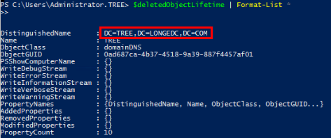
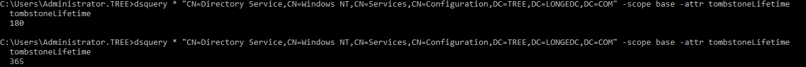

备份操作前务必先开启Active Directory回收站，否则恢复对象时可能存在部分属性恢复失败的问题。
以下操作以Windows Server 2019为例。
弹出“Active Directory管理中心”窗口。
弹出启用回收站确认的对话框。
右侧任务栏中“启用回收站”字体变灰表示已启用。
$deletedObjectLifetime | Format-List *

Set-ADObject -Identity “CN=Directory Service,CN=Windows NT,CN=Services,CN=Configuration,DC=TREE,DC=LONGEDC,DC=COM" -Partition “CN=Configuration, DC=TREE,DC=LONGEDC,DC=COM” -Replace:@{“tombstoneLifetime” = 365}
Set-ADObject -Identity “CN=Directory Service,CN=Windows NT,CN=Services,CN=Configuration,DC=TREE,DC=LONGEDC,DC=COM" -Partition “CN=Configuration, DC=TREE,DC=LONGEDC,DC=COM” -Replace:@{“msDS-DeletedObjectLifetime” = 365}
dsquery * "CN=Directory Service,CN=Windows NT,CN=Services,CN=Configuration,DC=TREE,DC=LONGEDC,DC=COM" -scope base -attr tombstoneLifetime
回显数字为更改后的天数表明修改生效。
